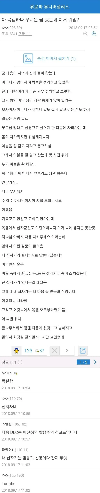
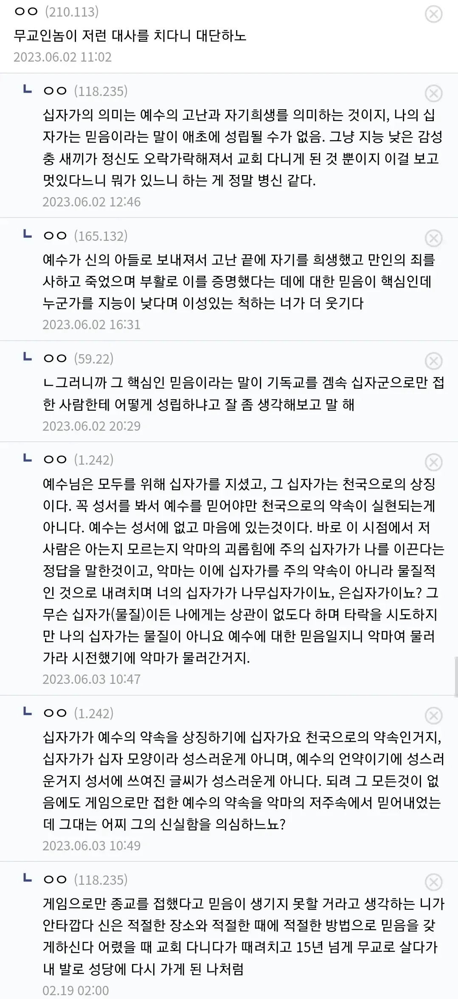
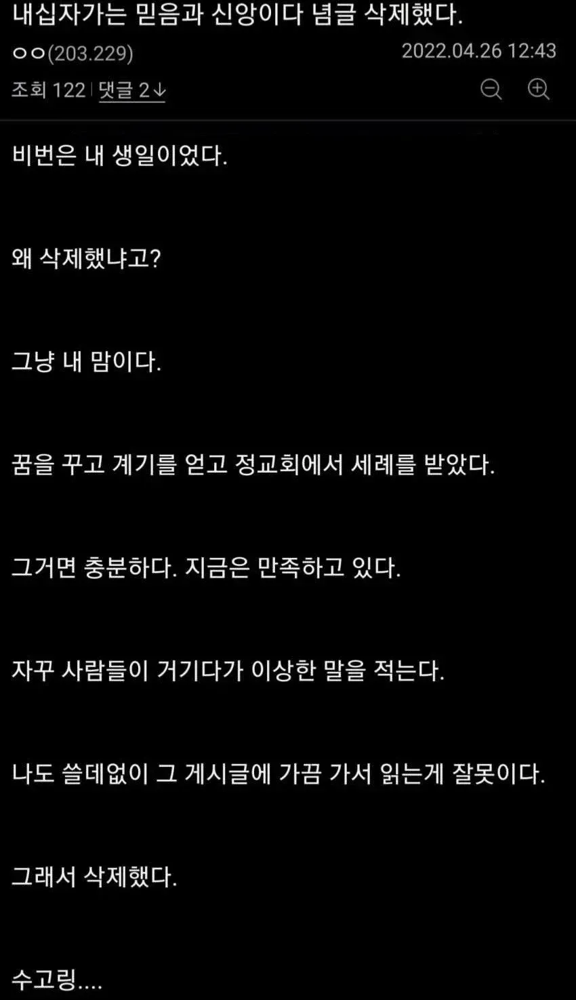
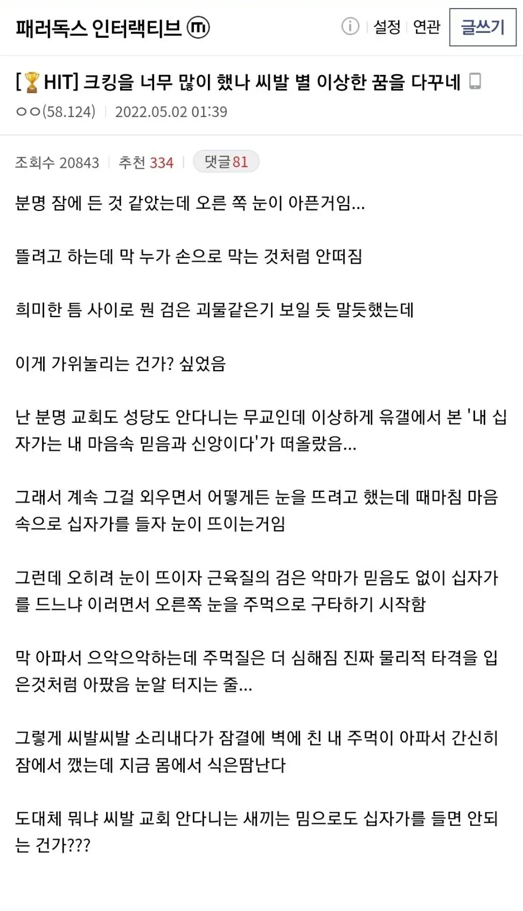
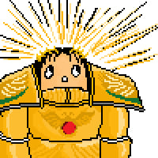

65 · 36 · 3 시간 전 · 원문




수집 당시 댓글 36개
마리괭이 · 1 일 전
↳ 답글 · 맛있는고구마 · 1 일 전
뭐야 ㅌㅋㅋㅋㅋㅋㅋㅋㅋㅋㅋ
↳ 답글 · ma가야로 · 1 일 전
이콘 전용 템플릿
↳ 답글 · 돼지바보임 · 1 일 전
시발 없는게 없놐ㅋㅋㅋㅋ
쀎쀎 · 1 일 전
↳ 답글 · 비빔교자 · 1 일 전
사스케 이야기가 안끝난다
↳ 답글 · 쀎쀎 · 1 일 전
쿠폰아까워 · 1 일 전
개뚜드려맞은게 개웃기네ㅋㅋㅋㅋ
다리 · 1 일 전
용기를 주세요 하면 용기를 줄까요 아님 용기를 낼 기회를 주까요?
믿음을 주세요 하면 하느님은 믿음이라는 걸 줄까요? 아님 믿을 수 있는 기회를 줄까요?
↳ 답글 · 01100100 · 1 일 전
그때 그때 싯가에 따라 결정된다네요~
↳ 답글 · Jabberwocky · 12 시간 전

ᅟᅠ듀 · 1 일 전
사실 까만건 하느님이고 무신론자가 갑자기 십자가 ㅇㅈㄹ하니까 얘 뭐지 싶어서 물어본거면 ㄷㄷ
어휴극혐 · 1 일 전
아도니스 · 1 일 전
스스로의 십자가를 찾지 않고 남의 십자가를 빌려왔으니 그러는거야
호러아니 · 1 일 전
내 십자가는 마음 속 믿음과 신앙이다 이러고 머리 속에 딴 것도 아니고 윾겜 오프닝이 떴다는게 웃김
링케 · 1 일 전
열성적인 트레잇을 얻었네
뫼르소 · 1 일 전
빌려온 신념으로 뭔
야근하면서논문쓰는중 · 1 일 전
누군가가 내 십자가를 빌려가서 구원 받을 수 있다면 나는 백번이고 천번이고 그들을 위해서 내 십자가를 내어줄 것이다
↳ 답글 · 경기도오산시보다더큰오산 · 1 일 전
ㄹㅇ 십자가를 뭐라고 이해한건지들은 모르겟지만...
막말로 옳고자 하는 마음만 갖고 잇으면 좀 헤멜지언정 언젠간 옳은길로 인도될건데...
간절한 순간에 맘 기댈곳 구원바랄곳 있다는게 축복이고 그때 기원한게 진심이 아니라면 뭐가 진심이람 ㅋㅋ
저새끼야말로 십자가를 우상화하는 중임
경기도오산시보다더큰오산 · 1 일 전
찐십자가 알빠노
청자가 이해한 십자가에 대한 답이 믿음 신앙 이면 된거지.
뭔진 모르지만 간절한 순간에 자기가 아는 믿음 신앙으로 화답하고 진짜 믿음신앙 얻엇음 된거네.
메데타시 메데타시
시트룰린 · 1 일 전
맘으로 들랬지 밈으로 드냐고 ㅋㅋㅋ
슈리마불가촉천민 · 1 일 전
개처맞는거까지가 완성ㅋㅋㅋㅋㅋ
크툴루 · 1 일 전
십자가로 팼어야지
비빔교자 · 1 일 전
어설프게 따라했다가 개뚜까맞았네ㅋㅋㅋㅋㅋㅋ
마휘핑 · 1 일 전
믿음도 없이 십자가를 논하느냐!!!!!!!!
자유게시판 · 1 일 전
지금 막 시리즈에서 전능의 뭐시기라는 소설 1편 막 봤는데...
똑같잖아!! 그 작가인가??
살색고추 · 1 일 전
하나님이 옷가게에 가서 옷을 한벌 고르고 하는 말
↳ 답글 · 살색고추 · 1 일 전
예루살렘
그 옷을 입었더니 사이즈가 안맞아서 하는 말
십 작아
↳ 답글 · 바나나맛분유 · 1 일 전
하 시바 개웃기네
↳ 답글 · 시흥교통 · 1 일 전
빈센트반호구 · 1 일 전
그러니까 패서 개종시키고 안 갔으면 더 패는구조네 악마새끼교구만
dududada · 1 일 전
댓글
수집 당시 댓글 36개
마리괭이 · 1 일 전
· 맛있는고구마 · 1 일 전
뭐야 ㅌㅋㅋㅋㅋㅋㅋㅋㅋㅋㅋ
· ma가야로 · 1 일 전
이콘 전용 템플릿
· 돼지바보임 · 1 일 전
시발 없는게 없놐ㅋㅋㅋㅋ
쀎쀎 · 1 일 전
· 비빔교자 · 1 일 전
사스케 이야기가 안끝난다
· 쀎쀎 · 1 일 전
쿠폰아까워 · 1 일 전
개뚜드려맞은게 개웃기네ㅋㅋㅋㅋ
다리 · 1 일 전
용기를 주세요 하면 용기를 줄까요 아님 용기를 낼 기회를 주까요?
믿음을 주세요 하면 하느님은 믿음이라는 걸 줄까요? 아님 믿을 수 있는 기회를 줄까요?
· 01100100 · 1 일 전
그때 그때 싯가에 따라 결정된다네요~
· Jabberwocky · 12 시간 전

ᅟᅠ듀 · 1 일 전
사실 까만건 하느님이고 무신론자가 갑자기 십자가 ㅇㅈㄹ하니까 얘 뭐지 싶어서 물어본거면 ㄷㄷ
어휴극혐 · 1 일 전
아도니스 · 1 일 전
스스로의 십자가를 찾지 않고 남의 십자가를 빌려왔으니 그러는거야
호러아니 · 1 일 전
내 십자가는 마음 속 믿음과 신앙이다 이러고 머리 속에 딴 것도 아니고 윾겜 오프닝이 떴다는게 웃김
링케 · 1 일 전
열성적인 트레잇을 얻었네
뫼르소 · 1 일 전
빌려온 신념으로 뭔
야근하면서논문쓰는중 · 1 일 전
누군가가 내 십자가를 빌려가서 구원 받을 수 있다면 나는 백번이고 천번이고 그들을 위해서 내 십자가를 내어줄 것이다
· 경기도오산시보다더큰오산 · 1 일 전
ㄹㅇ 십자가를 뭐라고 이해한건지들은 모르겟지만...
막말로 옳고자 하는 마음만 갖고 잇으면 좀 헤멜지언정 언젠간 옳은길로 인도될건데...
간절한 순간에 맘 기댈곳 구원바랄곳 있다는게 축복이고 그때 기원한게 진심이 아니라면 뭐가 진심이람 ㅋㅋ
· Jabberwocky · 12 시간 전
저새끼야말로 십자가를 우상화하는 중임
경기도오산시보다더큰오산 · 1 일 전
찐십자가 알빠노
청자가 이해한 십자가에 대한 답이 믿음 신앙 이면 된거지.
뭔진 모르지만 간절한 순간에 자기가 아는 믿음 신앙으로 화답하고 진짜 믿음신앙 얻엇음 된거네.
메데타시 메데타시
시트룰린 · 1 일 전
맘으로 들랬지 밈으로 드냐고 ㅋㅋㅋ
슈리마불가촉천민 · 1 일 전
개처맞는거까지가 완성ㅋㅋㅋㅋㅋ
크툴루 · 1 일 전
십자가로 팼어야지
비빔교자 · 1 일 전
어설프게 따라했다가 개뚜까맞았네ㅋㅋㅋㅋㅋㅋ
마휘핑 · 1 일 전
믿음도 없이 십자가를 논하느냐!!!!!!!!
자유게시판 · 1 일 전
지금 막 시리즈에서 전능의 뭐시기라는 소설 1편 막 봤는데...
똑같잖아!! 그 작가인가??
살색고추 · 1 일 전
하나님이 옷가게에 가서 옷을 한벌 고르고 하는 말
· 살색고추 · 1 일 전
예루살렘
· 살색고추 · 1 일 전
그 옷을 입었더니 사이즈가 안맞아서 하는 말
· 살색고추 · 1 일 전
십 작아
· 바나나맛분유 · 1 일 전
하 시바 개웃기네
· 시흥교통 · 1 일 전
· 쀎쀎 · 1 일 전
빈센트반호구 · 1 일 전
그러니까 패서 개종시키고 안 갔으면 더 패는구조네 악마새끼교구만
dududada · 1 일 전